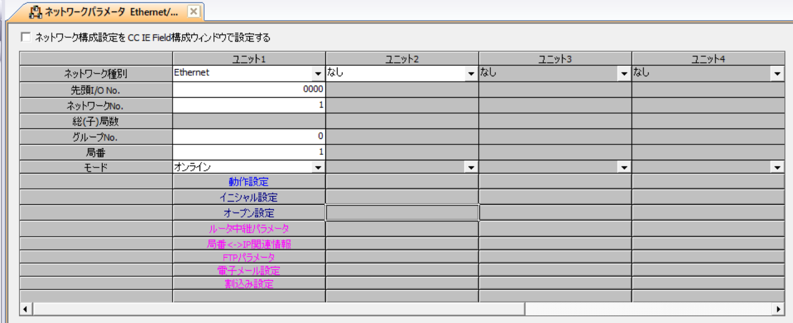
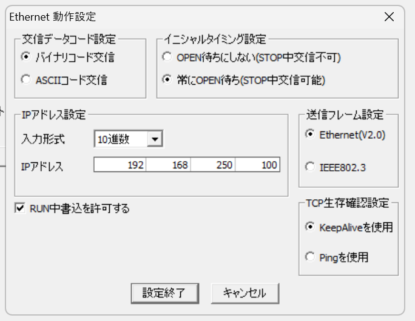
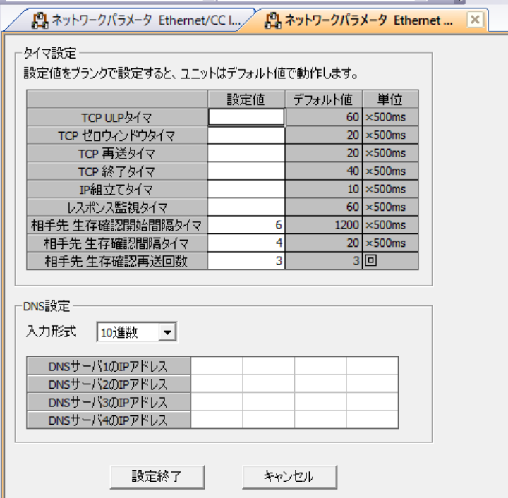
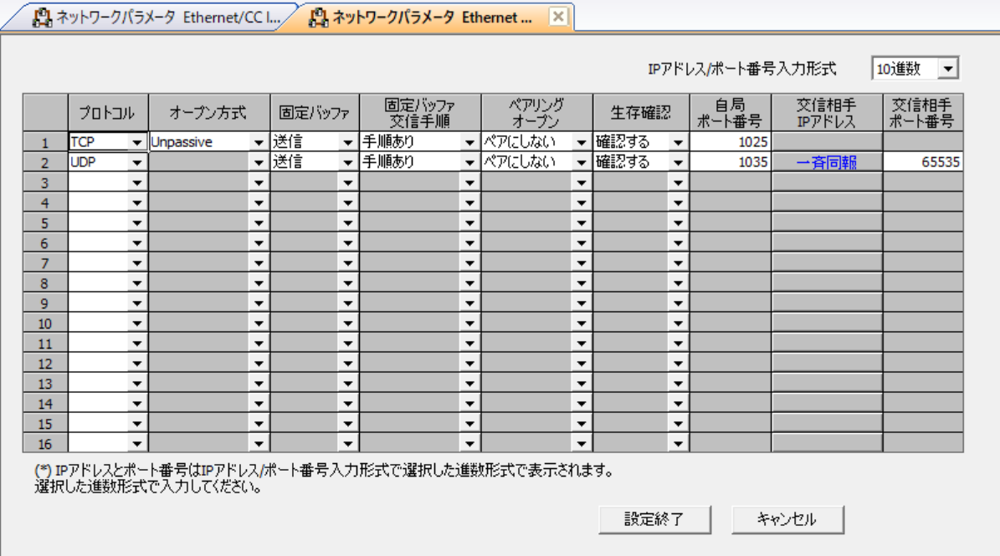

MELSEC / LJ71E71-100
MELSEC LJ71E71-100 接続設定例
MELSEC LJ71E71-100 を FA Labo PLC Console から SLMP で接続する場合の PLC 側設定例です。ネットワークパラメータ、動作設定、イニシャル設定、オープン設定を確認します。
設定例の前提
IPアドレス、サブネットマスク、デフォルトゲートウェイは現場ネットワークに合わせて設定してください。以下は FA Labo PLC Console から SLMP で接続する場合の設定例です。
説明の都合上、IP: 192.168.250.100、Port(TCP): 1025、Port(UDP): 1035 に統一しております。この設定に必ずしもする必要はありません。
PLCパラメータ設定後は一度PLCの電源をOFF/ONしてください。
PLC 側設定画面




ネットワークパラメータ
先頭I/O No.
要設定
ネットワークNo.
要設定
グループNo.
要設定
局番
要設定
モード
オンライン
動作設定
交信データコード設定
バイナリコード交信
イニシャルタイミング設定
常に OPEN 待ち
IPアドレス
192.168.250.100（例）送信フレーム設定
Ethernet(V2.0)
RUN 中書込を許可する
チェックあり
TCP 生存確認設定
KeepAlive を使用
イニシャル設定
タイマ設定
相手先 生存確認開始間隔タイマ
6相手先 生存確認間隔タイマ
4相手先 生存確認再送回数
3オープン設定
SLMP接続機器（TCP）
プロトコル
TCP
オープン方式
Unpassive
固定バッファ
送信
固定バッファ交信手順
手順あり
ペアリングオープン
ペアにしない
生存確認
確認する
自局ポート番号
1025SLMP接続機器（UDP）
プロトコル
UDP
固定バッファ
送信
固定バッファ交信手順
手順あり
ペアリングオープン
ペアにしない
生存確認
確認する
自局ポート番号
1035交信相手 IP アドレス
255.255.255.255交信相手ポート番号
65535アプリ側で選ぶ項目
通信設定
PLC 種別
MELSEC実機
PLC IP
192.168.250.100（例）ポート
1025（TCP） / 1035（UDP）機種
MELSEC-L (LJ71E71-100)通信
TCP / UDP
リモートパスワード
パスワード有の場合のみ入力
ルーティング
ネットワーク
0局番
255ユニットI/O
0x03FFマルチドロップ
0x00※上記ルーティングは自局指定（デフォルト）です。必要に応じて設定してください。